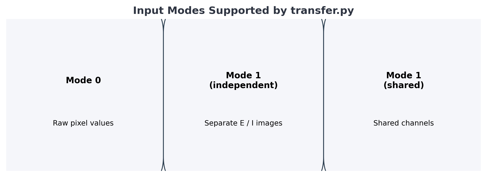

Network Visualization Guide#
Overview#
This guide provides detailed information on visualizing dendritic networks, their architectures, and training dynamics. The visualization tools in the dendritic modeling framework allow researchers to gain insights into network behavior, analyze computational mechanisms, and create publication-quality figures.
Network Architecture Visualizations#
Excitation-Inhibition Network (EINet)#
The EINet architecture combines excitatory and inhibitory pathways in a biologically-inspired neural network design. Key components to visualize include:
Excitatory pathways: Forward-propagating activations
Inhibitory pathways: Regulatory connections that modulate excitatory signals
Dendritic branches: Hierarchical processing units within each layer
Sparse connectivity: Visualizing the TopK connection patterns
import matplotlib.pyplot as plt
from dendritic_modeling.plot_utils import plot_einet_params
# Visualize the network parameters
plot_einet_params(
einet=model.net,
save_root="visualization_outputs/architecture",
reshape_fn=lambda x: x.view(28, 28), # For MNIST reshape
reshape_exc_syn=True,
logspace=True
)
Input Transformation Networks#
Input transformation networks preprocess data before it enters the dendritic network. Visualizing these components helps understand how information is transformed and separated into excitatory and inhibitory pathways.
# Visualize the input network architecture with excitatory and inhibitory paths
def visualize_input_network(model, input_example):
"""Create visualization of input transformation network structure"""
fig, axes = plt.subplots(1, 3, figsize=(15, 5))
# Original input
axes[0].imshow(input_example.reshape(28, 28), cmap='gray')
axes[0].set_title("Original Input")
# Get transformed inputs
with torch.no_grad():
exc_input, inh_input = model.net.input_transform(input_example.unsqueeze(0))
# Excitatory path output
exc_img = exc_input[0].cpu().reshape(-1, 1).numpy()
axes[1].imshow(exc_img, cmap='hot', aspect='auto')
axes[1].set_title("Excitatory Path Output")
# Inhibitory path output
inh_img = inh_input[0].cpu().reshape(-1, 1).numpy()
axes[2].imshow(inh_img, cmap='cool', aspect='auto')
axes[2].set_title("Inhibitory Path Output")
plt.tight_layout()
return fig
Input Modes Comparison#
The framework supports different input transformation modes that can be visualized for comparison:


Input Modes Comparison: Visual comparison of different input transformation modes showing how inputs are processed differently in each mode.#
Mode 0: Original input directly fed to the network
Mode 1: Same input used for both excitatory and inhibitory pathways
Mode 2: Separate transformation network for excitatory and inhibitory inputs
# Example code to visualize different input modes
def compare_input_modes(input_sample):
"""Compare the different input transformation modes"""
models = [
create_model(input_mode=0, config=config),
create_model(input_mode=1, config=config),
create_model(input_mode=2, config=config)
]
fig, axes = plt.subplots(3, 3, figsize=(12, 12))
for i, model in enumerate(models):
# Original input visualization
axes[i, 0].imshow(input_sample.reshape(28, 28), cmap='gray')
axes[i, 0].set_title(f"Mode {i}: Original")
# Get transformed inputs
with torch.no_grad():
exc_input, inh_input = get_network_inputs(model, input_sample)
# Visualize excitatory input
exc_vis = visualize_tensor(exc_input)
axes[i, 1].imshow(exc_vis, cmap='hot')
axes[i, 1].set_title(f"Mode {i}: Excitatory")
# Visualize inhibitory input
inh_vis = visualize_tensor(inh_input)
axes[i, 2].imshow(inh_vis, cmap='cool')
axes[i, 2].set_title(f"Mode {i}: Inhibitory")
plt.tight_layout()
return fig
Training Visualizations#
Accuracy and Loss Curves#
The most basic visualization for training is plotting accuracy and loss curves over epochs.
# Plot accuracy and loss curves
import matplotlib.pyplot as plt
def plot_training_metrics(train_losses, val_losses, train_accs, val_accs):
fig, (ax1, ax2) = plt.subplots(1, 2, figsize=(15, 5))
# Plot losses
ax1.plot(train_losses, label='Train Loss')
ax1.plot(val_losses, label='Validation Loss')
ax1.set_xlabel('Epochs')
ax1.set_ylabel('Loss')
ax1.legend()
ax1.set_title('Training and Validation Loss')
# Plot accuracies
ax2.plot(train_accs, label='Train Accuracy')
ax2.plot(val_accs, label='Validation Accuracy')
ax2.set_xlabel('Epochs')
ax2.set_ylabel('Accuracy')
ax2.legend()
ax2.set_title('Training and Validation Accuracy')
plt.tight_layout()
return fig
Computational Mechanism Visualizations#
Branch Activation Patterns#
Visualize how branches activate for different inputs to understand their specialization.
# Visualizing branch activation patterns
from dendritic_modeling.utils import record_branch_activations
import numpy as np
def visualize_branch_activations(model, dataset, device='cpu'):
# Record branch activations for the dataset
activations, labels = record_branch_activations(model, dataset, device=device)
# Create average activation maps per class
n_classes = len(set(labels.tolist()))
fig, axes = plt.subplots(2, 5, figsize=(15, 6))
axes = axes.flatten()
for class_idx in range(n_classes):
# Get activations for this class
class_mask = labels == class_idx
class_activations = activations[class_mask]
mean_activations = class_activations.mean(dim=0).cpu().numpy()
# Create heatmap
im = axes[class_idx].imshow(mean_activations, cmap='viridis')
axes[class_idx].set_title(f'Class {class_idx}')
axes[class_idx].set_xlabel('Branches')
axes[class_idx].set_ylabel('Layers')
plt.colorbar(im, ax=axes)
plt.tight_layout()
return fig
Branch Ablation Analysis#
Visualize the impact of ablating individual branches on network performance.
# Visualizing branch ablation effects
from dendritic_modeling.utils import analyze_branch_ablation
def visualize_branch_ablation(model, dataset, device='cpu'):
# Run branch ablation analysis
results = analyze_branch_ablation(model, dataset, device=device)
# Extract results
branch_importances = results['branch_importances']
baseline_acc = results['baseline_acc']
# Visualize branch importances
fig, ax = plt.subplots(figsize=(10, 6))
im = ax.imshow(branch_importances, cmap='RdBu_r', aspect='auto')
ax.set_title('Branch Importance (Accuracy Drop)')
ax.set_xlabel('Branch Index')
ax.set_ylabel('Layer Index')
plt.colorbar(im, ax=ax)
plt.tight_layout()
return fig
Layer Ablation Analysis#
Visualize the impact of ablating entire layers on network performance.
# Visualizing layer ablation effects
from dendritic_modeling.utils import analyze_layerwise_ablation
def visualize_layer_ablation(model, dataset, device='cpu'):
# Run layer ablation analysis
results = analyze_layerwise_ablation(model, dataset, ablation_mode='direct', device=device)
# Extract results
layer_importances = np.array(results['accuracy_drops'])
baseline_acc = results['baseline_acc']
# Visualize layer importances
fig, ax = plt.subplots(figsize=(10, 6))
bars = ax.bar(range(len(layer_importances)), layer_importances)
ax.set_title('Layer Importance (Accuracy Drop)')
ax.set_xlabel('Layer Index')
ax.set_ylabel('Accuracy Drop')
ax.set_ylim(0, max(layer_importances) * 1.2)
# Add value labels
for bar in bars:
height = bar.get_height()
ax.text(bar.get_x() + bar.get_width()/2., height + 0.01,
f'{height:.3f}', ha='center', va='bottom')
plt.tight_layout()
return fig
Model Weights Visualization#
Visualizing model weights helps understand what features different parts of the network have learned.
from dendritic_modeling.plot_utils import plot_einet_params
# Visualize weights of the network
plot_einet_params(
einet=model.net,
save_root="visualization_outputs/weights",
reshape_fn=lambda x: x.view(28, 28), # For MNIST reshape
reshape_exc_syn=True,
logspace=True
)
Network Activations Visualization#
Visualizing activations helps understand how the network processes different inputs.
from dendritic_modeling.plot_utils import plot_einet_activations
# Visualize activations for a batch of inputs
plot_einet_activations(
einet=model.net,
input_list=test_data[:10][0],
save_root="visualization_outputs/activations",
save_in_dir=True,
filename='digit_activations'
)
Using the Visualization Manager#
The framework provides a PlotManager class that can automate many of these visualizations:
from dendritic_modeling.visualization_manager import PlotManager
# Create a plot manager
plot_manager = PlotManager(
model=model,
data={'train': train_data, 'valid': valid_data, 'test': test_data},
save_path="visualization_outputs",
device='cuda',
plots=['weights', 'activations', 'branch_info', 'ablation']
)
# Generate all plots
plot_manager.generate_plots()
# Generate plots for specific epoch
plot_manager.generate_plots(epoch=10)
Configuration-Based Visualization#
You can also enable visualizations through the configuration system:
visualization:
enabled: true
visualize_epochs: [1, 10, 50] # Epochs at which to visualize
plots:
- weights
- activations
- branch_info
- ablation
parameters:
save_figures: true
figure_format: "png"
Recommended Visualization Practices#
Start Simple: Begin with weights and activation visualizations
Track Progress: Generate visualizations at multiple epochs to track learning progress
Compare Strategies: Use similar visualizations when comparing different learning strategies
Interactive Exploration: Use interactive plots when possible for deeper analysis
Combine with Analysis: Pair visualizations with quantitative analysis for deeper insights
The visualizations described in this guide help gain insights into how dendritic networks learn and process information differently from traditional neural networks.